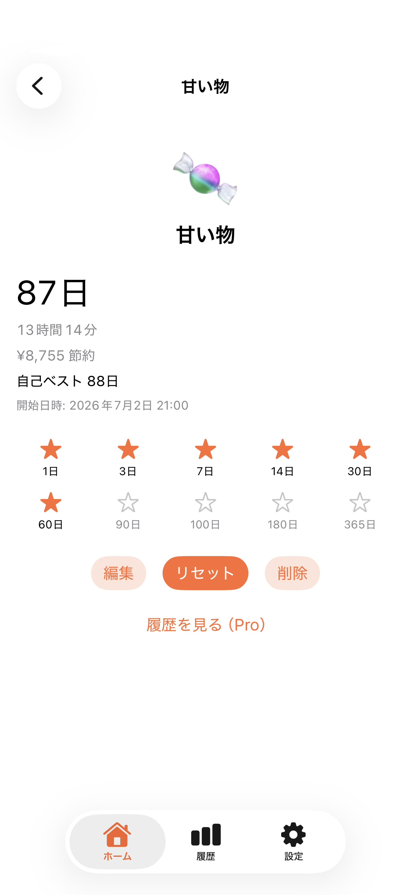
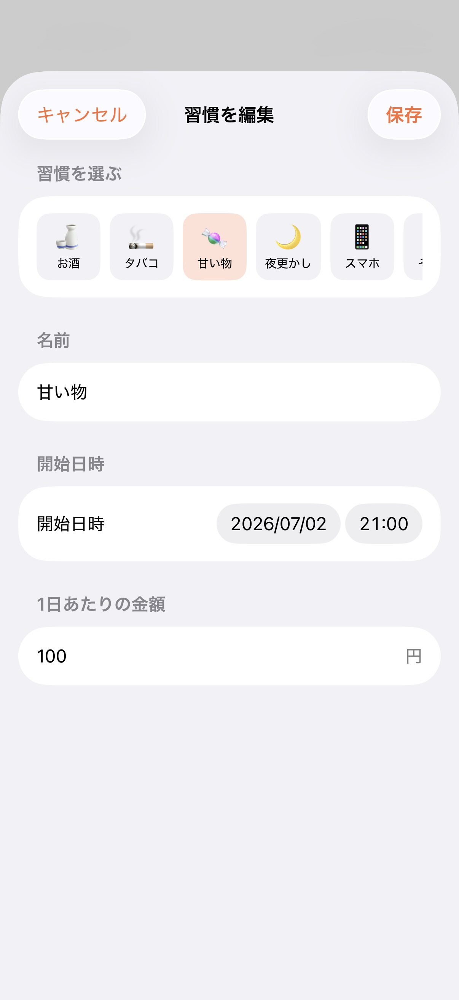
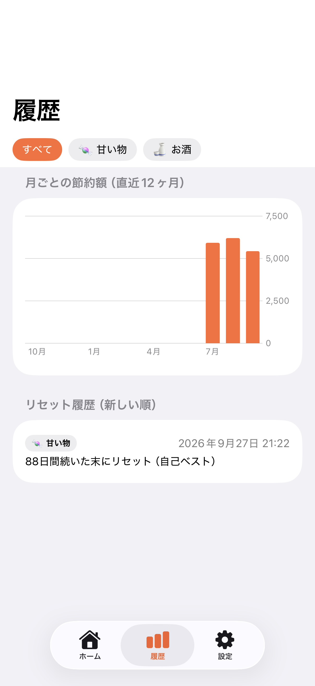

悪習慣を断ち切り、新しい自分へ。
日々の積み重ねを記録し、あなたの目標達成を強力にサポートします。

ひと目でわかる日々の成果
現在継続している日数や時間、そして我慢したことで節約できた金額がホーム画面で瞬時に確認できます。複数の習慣を並行して管理でき、日々の頑張りがすぐに視覚化されます。

モチベーションを高めるバッジ機能
1日、3日、7日、30日と継続日数に応じたマイルストーンバッジ（星マーク）が解放されていきます。これまでの自己ベスト記録も常に表示されるため、過去の自分を超えるためのモチベーション維持に繋がります。

柔軟な習慣設定とカスタマイズ
お酒、タバコ、甘い物、夜更かし、スマホなど、豊富なアイコンから自分の断ち切りたい習慣を選ぶことができます。開始日時や1日あたりの節約金額も細かく設定でき、あなたに合った管理が可能です。

グラフで振り返る履歴データ(有料)
月ごとの節約額が分かりやすい棒グラフで表示され、長期的な成果を直感的に振り返ることができます。また、万が一継続が途切れてしまった場合でも「リセット履歴」として記録が残るため、自己分析に役立ちます。